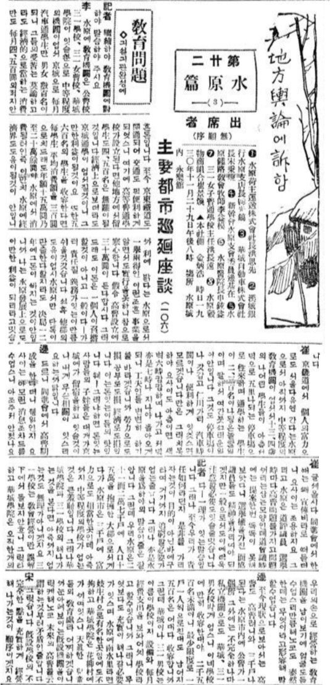
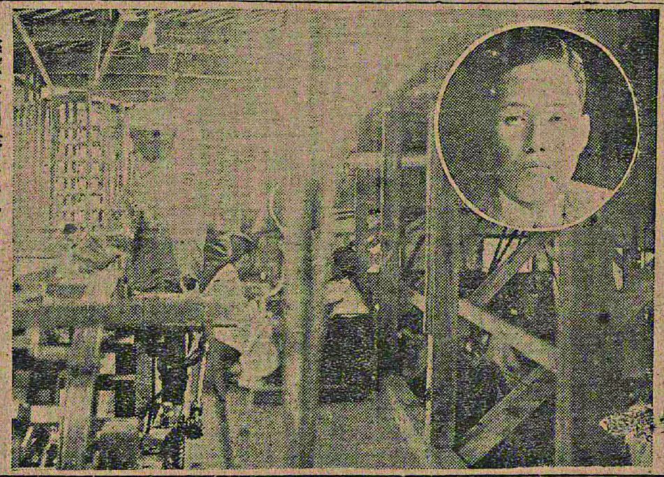
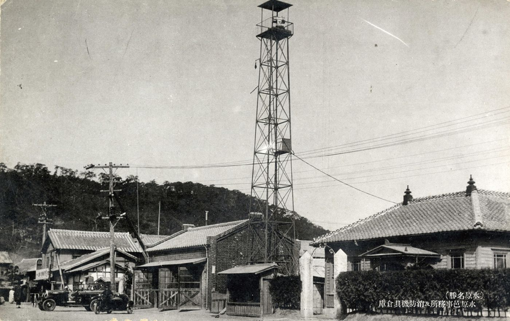
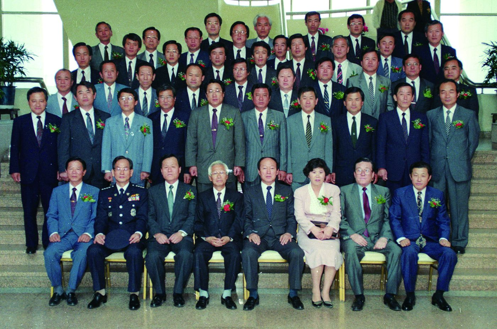
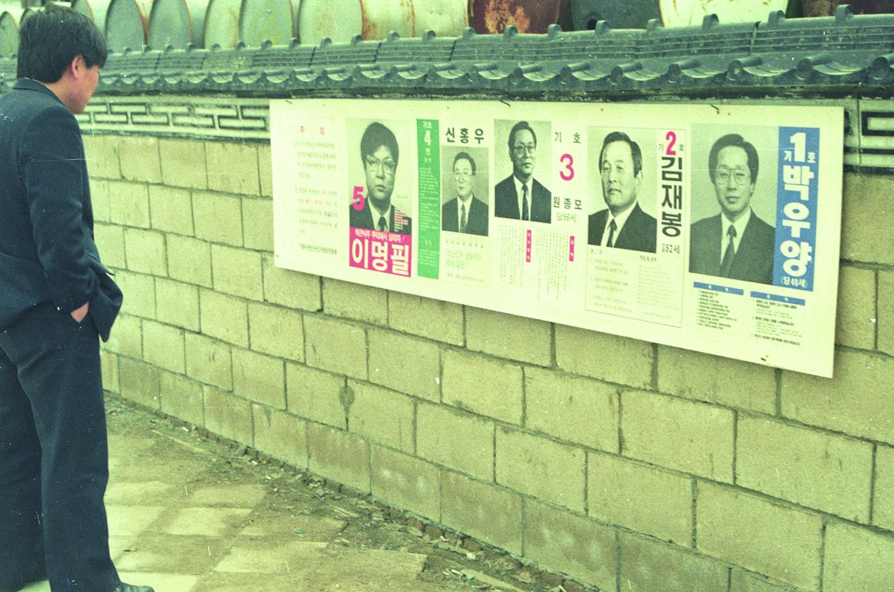
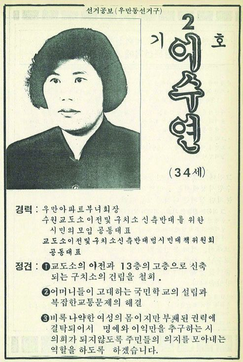
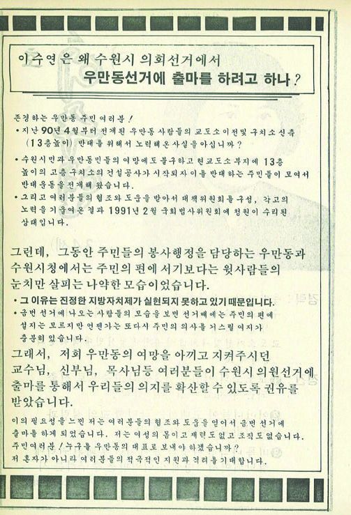
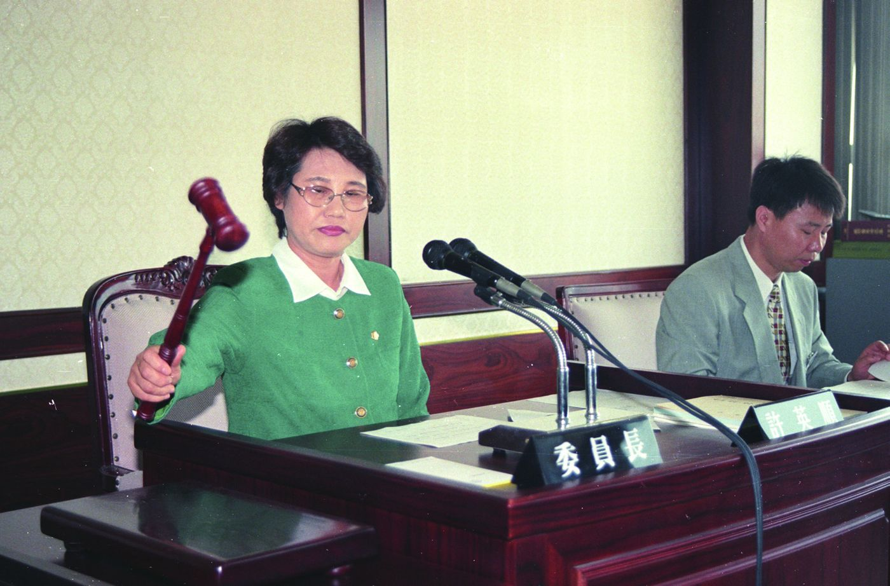
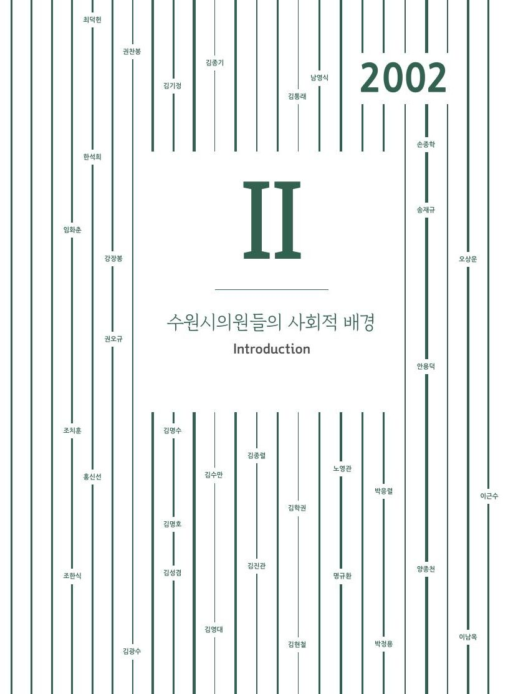

1931면협의원 후보들의 수원 발전방안 토의

1934김학배(제4대 수원읍회 의원)와 직물공장

일제시기수원읍사무소와 수원공회당

1952제1대 당선시의원 좌담회 기념 촬영

1950년대초대 전기 부의장 차인순

1956지방자치제 실시 4주년 기념 종합운동경기대회

1991제4대 수원시의회 개원 기념사진

1991제4대 시의원 선거 입후보자 벽보

1991이수연 후보 선거공보 (앞)

1991이수연 후보 선거공보 (뒤)

1997허영순 위원장

Ⅱ장수원시의원들의 사회적 배경 · 120–153쪽